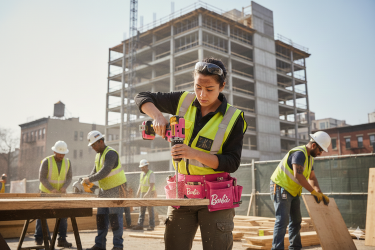
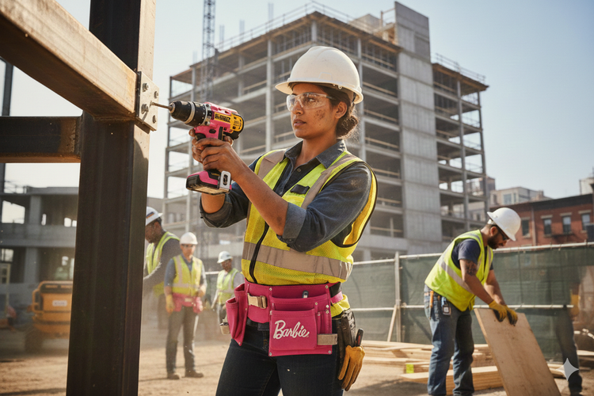
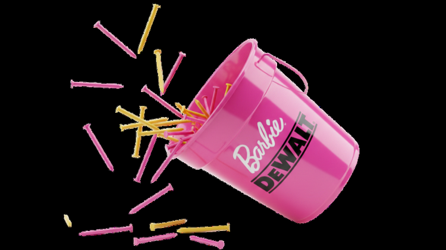
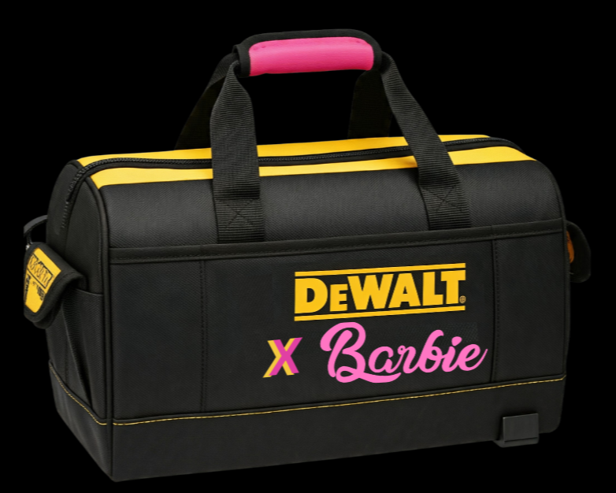
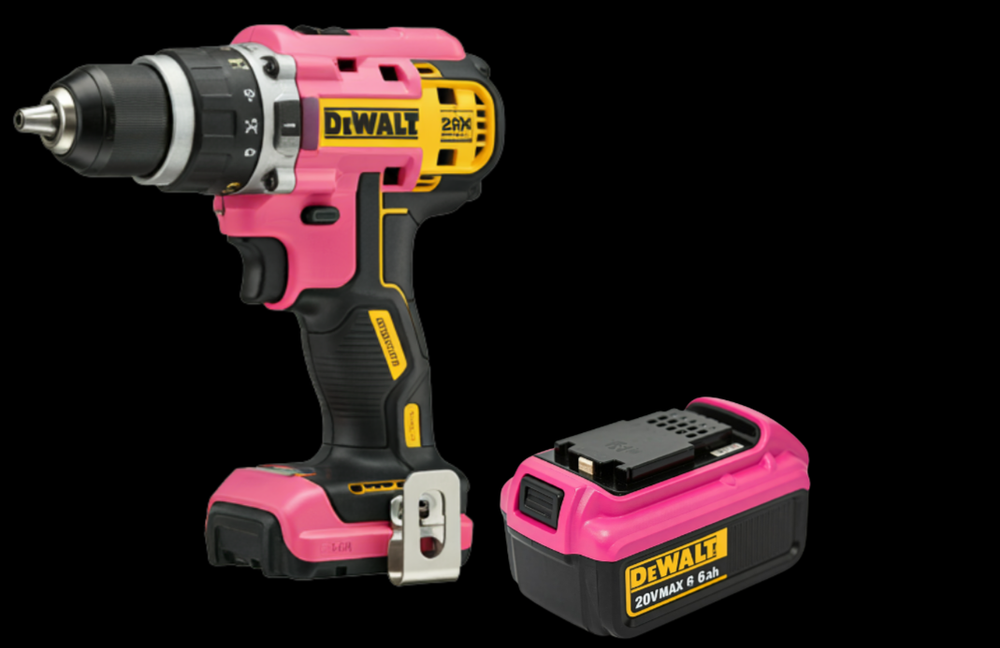
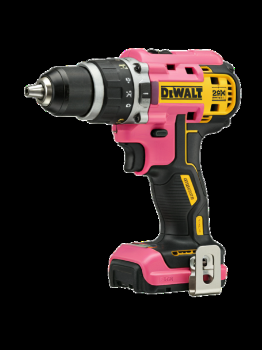
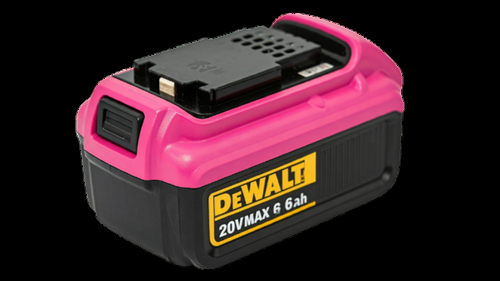

The
Challenge
While women make up 15% of the construction industry, their presence on the ground vanishes to just 1% in manual, on-site roles.
Power meets possibility: build your dream with DeWalt strength and Barbie confidence.
The “boots-on-the-ground” gap isn’t just a recruitment issue — it’s a cultural one, rooted in early childhood perception and the lack of visible representation in trades.


The
Strategy
A subversive collaboration between DeWalt and Barbie, designed to de-stigmatize manual labor for women.
By combining professional-grade power tools with Barbie’s “You Can Be Anything” ethos, the campaign moves beyond the boardroom and onto the job site.

The
Execution
A limited-edition line of professional DeWalt tools in iconic Barbie pink, designed to be seen on active construction sites.



Build Your Dream: a pop-up in Leicester Square
A high-visibility “Build Your Dream” pop-up in London’s Leicester Square let young girls and women use the collab tools to build custom furniture — proving that “on-site” is a place where they belong.
